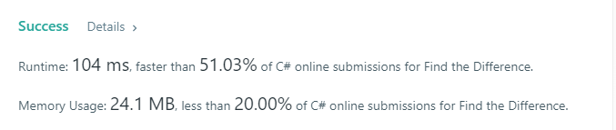
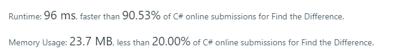
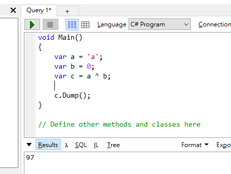
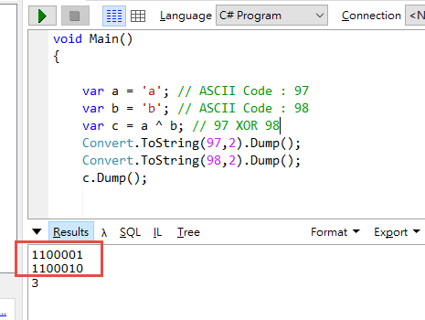
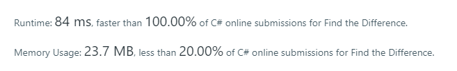

LeetCode 這一題感覺非常容易啊，給出兩個字串，這兩個字串當中只會有一個字是不一樣的，找出來就行了。
Test Case
輸入：s = “abcd”, t = “abcde”
輸出：e
解題思路
Dirty 解法
當然就是最直覺的解法囉，既然兩個字串只會有一個字不一樣，那麼就把同時出現在兩邊的單字給刪除了，剩下的那個就是答案了
1 | public class Solution { |

進階寫法
第一版的 Dirty 寫法，完全沒有任何的優化，想當然的成績應該不是很理想，所以當然要接著想想看還能夠怎麼處理
我們知道英文字母都可以轉成 ASCII Code 來處理，那麼也就是說，我能夠將兩個字串的 ASCII 碼都算出來，然後加總，接著得到兩個數字相減，就是那個答案的 ASCII Code 了
1 | public class Solution { |
上面的程式碼可以再簡寫，但是我覺得沒有什麼意義，能夠清晰且直覺的表達程式的意涵，比所謂的一行代碼好多了，而且，就算自己很容易就能夠看懂，但是團隊成員通常程度有高有低，一個良好的習慣是，盡量用大家都能夠理解的寫法，會省去不少時間成本

最終寫法
第二版與第一版在執行速度及記憶體的用量來看，差異並不大，但是還是能夠在延續這個思路下去進行優化，曾經有利用過 XOR 的技巧，這次就派上用場了
來溫習一下 XOR 的真值表，當兩個輸入都相同，輸出為 0；兩個輸入不同的話，則輸出為 1
| XOR | 1 | 0 |
|---|---|---|
| 1 | 0 | 1 |
| 0 | 1 | 0 |
也就是說，我拿英文字母a去跟 0 做 XOR 運算，會得到 a 的 ASCII Code：97

那麼，如果我用a跟b去做 XOR，接著再用答案去跟b做一次 XOR，也是會得到 97
這是為什麼呢？來看一下這張圖

a 的 ASCII Code 是 97，也就是110 0001
b 的 ASCII Code 是 98，也就是110 0010
參考 XOR 真值表，得出最終結果 000 0011，也就是3
接著如果再用3去跟b做 XOR 運算，答案會是110 0001，也就是 97
所以，我們只需要將題目給的兩個字串，逐一透過 XOR 運算，最終就可以得到答案
1 | public class Solution { |
